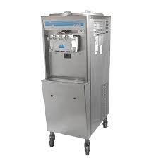
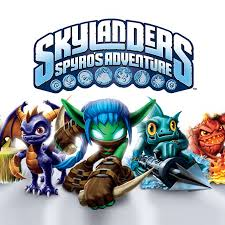

What Is It?
Right to Repair is the idea that consumers and businesses should be provided the tools and access to products that they bought and own so that they can repair or modify the product as they wish without the threat of legal action against them. Section 1201 of the DMCA challenges this idea, making it illegal to break or bypass "digital locks" on products (which repairs and modifications often need to do) without authorization, enabling corporations to threaten consumers who wish to repair or modify products that they own, or charge businesses in order to receive an authorized repair, which deters them from repairing the product in question in the first place (ex. McDonald's Ice Cream Machines).
Examples of DMCA Abuse
McDonald's Ice Cream Machines

Many of McDonald's ice cream machines were seemingly always broken because Taylor Co. used DMCA §1201 to disallow “unauthorized” repairs to their machines. This led many establishments to either be charged for a scheduled maintenance, and having to wait a long time for the repair, or give up on repairs on the machines to save money. Due to this dynamic, Taylor Co. allegedly had 25% of its revenue made from their abuse of the law alone. It wasn't until October of 2024, when an exception was added to the law for fast food restaurants.
Video Game and Video Game Console Hacks

In 2011, Brandon Wilson hacked into a game by Activision called “Skylanders: Spyro's Adventure,” which has a feature where you scan a toy on a USB peripheral to unlock the content associated with it. He says that he hacked into the game because he was curious about how it worked, and published what he found online, but never posted/never intended to post the instructions on how to hack the game. Regardless, he later received a Cease & Desist letter that forced him to take down everything he had posted.
Nintendo uses DMCA to legally pursue distributors of modded Nintendo Switches (and ban/brick any existing ones). While not all of these Switches had pirated content, Nintendo actively tries to shutdown all of them in their campaign against piracy.
Calculator Modifications
In 2009, three people (one of which being Brandon Wilson from before) reverse-engineered the TI-83 Plus graphing calculator in order to install their own OS's. They wrote about it online, and shared cryptographic keys that bypassed the signature checks (checks for identity, and that the OS was not changed) on the calculators. Texas Instruments (TI) successfully threatened them legal action under the DMCA, causing the takedown of their posts (however, later the EFF successfully proved that these threats were actually baseless).
Take Action in Emailing Your Representatives
To help push for Right to Repair in Pennsylvania, you can help us in our campaign to email legislators of the PA Local Government to vote 'Yes' on the current Right to Repair bill(HB 1512). You can take that action by clicking the button below to begin: